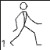

Les 6
Viewbox verplaatsen
Vergroten/verkleinen
De code:
<svg width="256" height="230">
<path d="..." fill="#FBBC04"/>
<path d="..." fill="#4285F4"/>
<ellipse fill="#34A853" cx="42" cy="188" rx="42" ry="41"/>
</svg>
<svg width="150" height="150">
...
</svg>
<svg width="150" height="150" viewBox="0 0 256 230">
...
</svg>
"ViewBox" slaat dus op de grootte van het stuk van de SVG dat wordt getoond, ongeacht, hoe groot de SVG zelf wordt getoond. Ook bepaalt het de viewBox="x y width height"
De viewbox verschuiven
viewbox="0 0 250 150"Deze viewbox hoeft ook niet bij 0,0 te beginnen. Dit werkt ook:
Het enige dat we verschoven was de viewBox met de code viewbox="0 0 250 150". Als je deze code namelijk weglaat is het zichtbare gebied gelijk aan de hoogte en breedte van de SVG en begint het altijd op 0,0
| viewBox=" | 0 | 0 | 500 | 300 | " |
| x | y | width | height |
Links is het resultaat (iets kleiner dan eerder)
Rechts heb ik de viewBox getekend
OPDRACHT 1
Maak deze GIF-animatie  na met de SVG uit bovenstaande fiddle, door alleen maar de viewbox met een breedte en hoogte van 64x64 te verschuiven, achtereenvolgens naar:| 0,0 | 64,0 | 128,0 |
| 0,64 | 64,64 | 128,64 |
| 0,128 | 64,128 | 128,128 |
Het makkelijkste is, als je de viewBox strings in een array stopt en met een animate functie de viewbox van de SVG aanpast.
Zoals je misschien zult zien, is je SVG animatie niet heel veel groter dan de gif animatie. Wel is deze veel flexibeler, je kunt hem stoppen, sneller en langzamer laten gaan, en zelfs roteren en flippen, zonder kwaliteitsverlies.